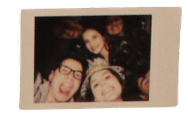
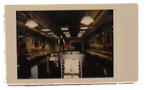
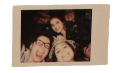
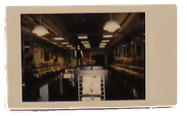

I digitized many of my polaroids. That’s not generally a big deal, but it’s representative of something bigger. For me, the main attraction of polaroids is that they’re physical, they’re analog. They cannot be replicated; there is only one copy of each polaroid you snap. It feels….. almost intimate knowing this. Having this tangible, unique captured memory. Each polaroid is a physical record of something that happened, and each polaroid itself can contain love, from doodles on the white border to fingerprints smudging the image.
Digital photos are somewhat different. You can easily replicate them, so I would argue that sharing a digital photo has less inherent meaning, since you’re essentially sending a copy of a photo. There can be infinite copies of the same photo available to people all around the world, free of smudges, fingerprints, or any other type of damage.
Converting an image from a physical form into a digital form is fascinating to me. Where before there was one, there are now many. Where before sharing was slow and difficult, now it is instant. Before, the image was susceptible to cold, heat, and clumsiness and now it is now immortal.
 



I don’t think that one format is inherently better than the other; each has its own strengths and weaknesses. But what does it mean to span across both analog and digital formats? Do you get the best of both worlds, or is something lost in the transfer?